1. Getting started
Stapik Calendar is a desktop calendar. It shows one month at a time, and every day can hold any number of entries. An entry has a name, an optional web link and an optional color.
Everything you do is saved automatically on your computer. If you have a Stapik Cloud server, the calendar can also be kept in sync between all your devices (see Stapik Cloud synchronization).
A quick tour:
- Start the application from your application menu (Stapik Calendar). It opens on the current month.
- Double-click an empty area of any day.
- Type a name and press OK. The entry appears in that day.
- Right-click the entry to give it a color, drag it to another day to move it, or click ✕ to delete it.
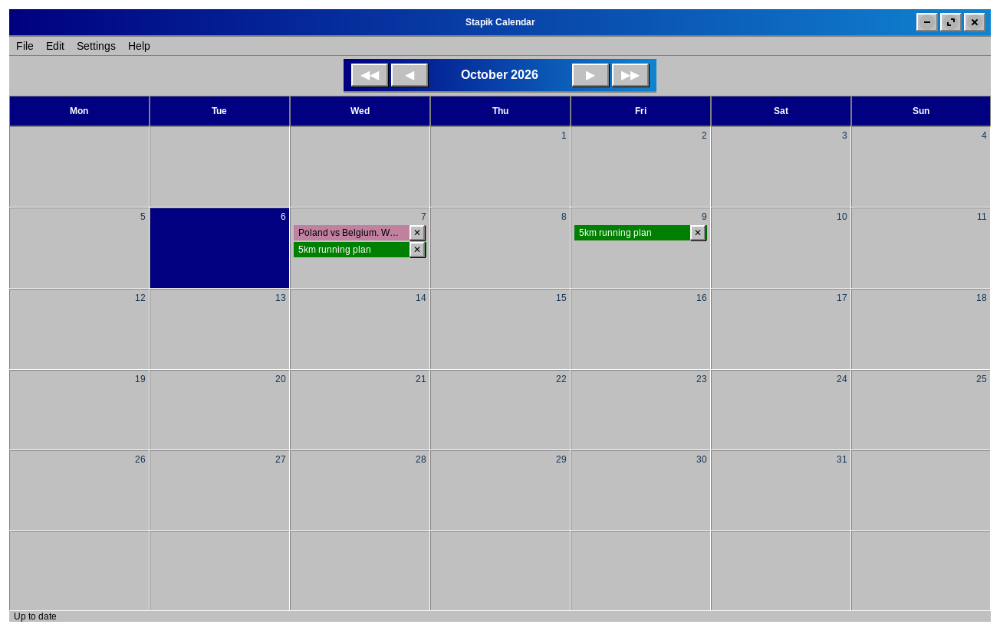
2. The main window
From top to bottom the window consists of:
- Menu bar — File, Edit, Settings and Help (see Menus).
- Navigation bar — the name of the displayed month and year with buttons to change them.
- Weekday header — Mon to Sun. Weeks start on Monday.
- Day cells — one cell per day. The number of the day is in the corner of its cell, and today is highlighted. Cells outside the displayed month stay empty.
- Status bar — shown only when the calendar is connected to a cloud; it tells you the synchronization state (see Stapik Cloud synchronization).
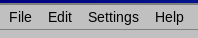
4. Entries
4.1 Adding an entry
Double-click an empty area of a day cell. The New entry window opens:
- Name — required. Without a name the entry is not created.
- Link (optional) — a web address that you can open later with one click.
- Color — the first, empty square means no color; the others are colors (see Colors).
Confirm with OK, or choose Cancel to discard.
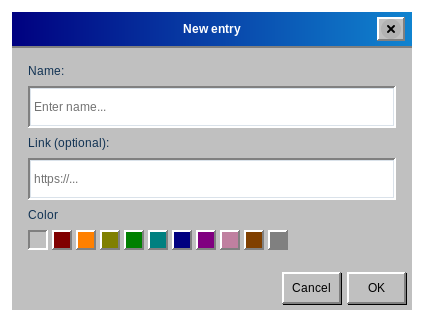
4.2 Quick add from the clipboard
If you copied a web address (starting with http:// or https://), right-click a day. The application creates an entry for that day with the address as the link and the title of the web page as the name. This needs an internet connection; if the title cannot be read, the entry is named No name. When the clipboard does not contain a web address, nothing happens.
4.3 Opening a link
When an entry has a link, the mouse pointer turns into a hand over its name. Click the entry once to open the link in your default browser. The application waits a moment (the double-click time set in your system) to be sure that you did not mean to double-click, so the page opens with a short delay.
http and https links are opened. A link typed without a scheme, such as example.com, is opened as https://example.com.4.4 Editing an entry
Double-click an entry to open the Edit entry window, where you can change the name, the link and the color.
4.5 Deleting an entry
Click the ✕ button at the right edge of the entry. A deleted entry can be brought back with Undo.
4.6 Colors
Right-click an entry to open a row of squares and click the color you want. You can also choose the color in the New entry and Edit entry windows. Available colors: red, orange, yellow, green, teal, blue, purple, pink, brown and gray, plus the default look with no color.
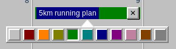
4.7 Moving and copying
Drag an entry and drop it on another day to move it. Hold Ctrl while dragging to copy it instead. Dropping an entry on its own day changes nothing.
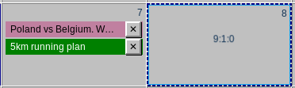
4.8 Days with many entries
When a day has more entries than fit in its cell, the cell can be scrolled. Entries are listed in the order in which you added them.
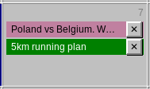
5. Undo and redo
Adding, editing (including changing the color), deleting, moving and copying entries can all be undone. Use Edit → Undo and Edit → Redo, or the shortcuts Ctrl+Z and Ctrl+Shift+Z.
The menu item names the operation, for example Undo delete entry “Dentist”, and is grayed out when there is nothing to undo or redo. The history keeps up to 100 steps. It is not saved when you close the application, and it is cleared when the version from the cloud replaces your local calendar (see Stapik Cloud synchronization).
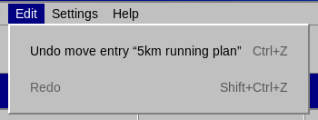
7. Shortcuts and mouse actions
Keyboard
| Keys | Action |
|---|---|
| Ctrl+Z | Undo |
| Ctrl+Shift+Z | Redo |
| Ctrl+Q | Exit |
| F1 | Open this guide |
Mouse
| Where | Action | Result |
|---|---|---|
| Empty area of a day | double-click | new entry |
| Empty area of a day | right-click | quick add from a copied web address |
| Entry | click | opens its link (if it has one) |
| Entry | double-click | edit the entry |
| Entry | right-click | choose a color |
| Entry | drag to another day | move it |
| Entry | Ctrl + drag to another day | copy it |
| ✕ on an entry | click | delete the entry |
8. Language and theme
Choose Settings → Language to switch between Polish, English and German. The whole application changes immediately, including the names of the months and weekdays.
Choose Settings → Theme to change the look: Classic (a retro look), Classic Pink (the same layout in pink and purple), Neoclassic or Modern (a light or dark). Your choices are remembered the next time you start the application.
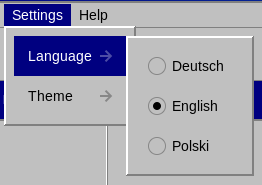
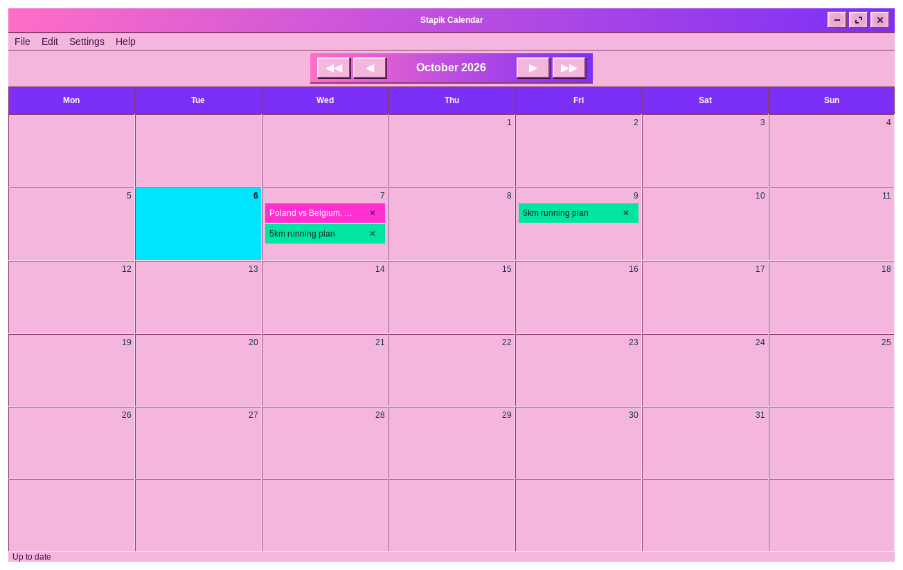
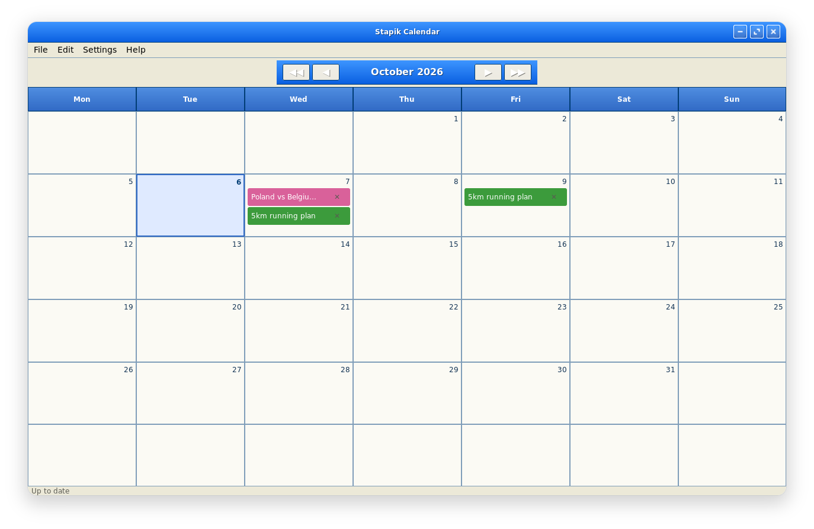
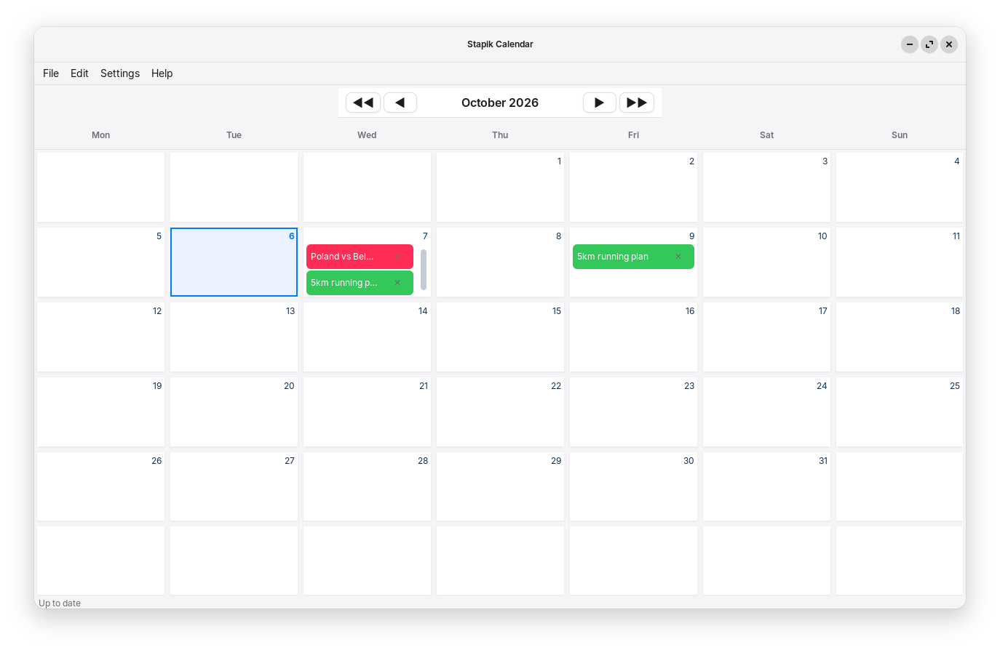
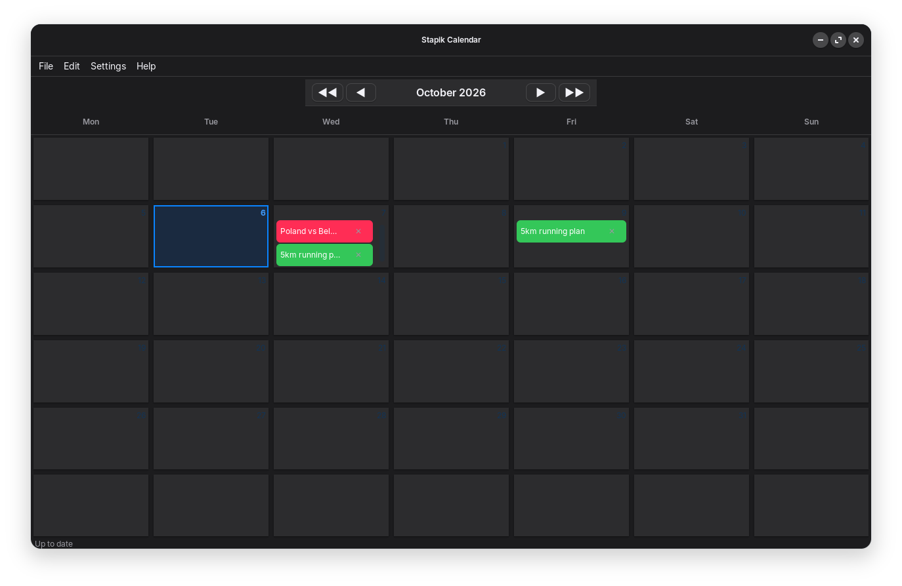
9. Stapik Cloud synchronization
Stapik Cloud is a server that you run yourself. It keeps one copy of your calendar so that all your computers show the same entries. The cloud is optional — without it the calendar simply works on one computer.
9.1 What you need
- A running Stapik Cloud server that your computer can reach, and its address (the API URL), for example
https://cloud.example.com. - An API key issued for this device. In the Stapik Cloud admin panel every device gets its own key; there is no shared key.
The calendar is stored in the document named calendar.json on the server.
9.2 Connecting
- Choose File → Connect to cloud.
- Enter the API URL. It must start with
http://orhttps://. - Enter the API key. Tick Show key if you want to check what you typed.
- Click Connect.
- After a moment a message tells you whether the connection worked (Connected) or not (Could not connect, with the reason).
http://, the window warns you that the connection is not secure: the key and your calendar are sent unencrypted. Use https:// whenever the server is reachable over the internet.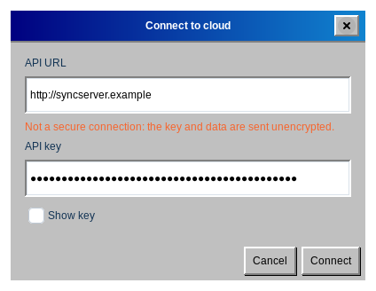
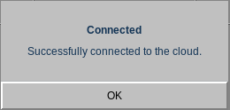
The settings are remembered. Next time the application connects by itself, and the window you open from Connect to cloud is already filled in, so you can use it to change the server or the key.
What happens at the first synchronization: if the cloud is still empty, your calendar is uploaded. If the copy in the cloud is newer than yours, it replaces your local calendar. Otherwise your local calendar is uploaded.
9.3 The status bar
When a cloud is configured, the bottom of the window shows the current state:
| Status | Meaning |
|---|---|
| Up to date | Your calendar and the cloud are the same. |
| Syncing… | A synchronization is in progress. |
| Offline | The server cannot be reached. Your changes are safe on this computer, and the application retries by itself (first after 2 seconds, then less and less often, at most every 5 minutes). |
| Conflict: server version kept | The cloud held a newer version, and it replaced your local one (see Conflicts). |
| Sync error | The synchronization failed for another reason, for example the server rejected the request. Local data is not affected. |
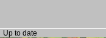
9.4 How synchronization works
- Every change is saved on your computer immediately.
- Sending to the cloud happens in the background, about 1.5 seconds after your last change, so the window never freezes. Several quick changes are sent together.
- When you close the application, any change that has not been sent yet is sent first.
- File → Sync synchronizes immediately.
9.5 Conflicts and several devices
The whole calendar is compared as one document, and the newer version wins. Entries are never merged one by one. If you change the calendar on two computers while both are offline, the version that reaches the server later replaces the other.
When the server version wins, it replaces the calendar on your computer and the undo history is cleared. By default Stapik Cloud keeps the replaced version in the document history, so it can be restored from the admin panel; restore it there and synchronize again.
9.6 Changing the server or stopping synchronization
To use another server or key, open File → Connect to cloud again and enter the new values. There is no disconnect button: to stop using the cloud, close the application and delete the file ~/.local/share/stapikcalendar/config.json. Your local calendar is not affected.
The API key is stored in that file in plain text, readable only by you, so keep your home directory protected.
10. Your data and backups
The calendar lives in your home directory, in ~/.local/share/stapikcalendar/:
| File | Content |
|---|---|
calendar.json | your calendar |
calendar.json.bak, .bak.2, .bak.3 | the three previous versions, replaced every time you save |
config.json | cloud address and key |
cloud-baseline.json | technical data about the last synchronization |
Your language and theme are stored in ~/.config/stapikcalendar/settings.json.
Restoring a backup
- Close the application.
- Copy
calendar.json.bak(or.bak.2,.bak.3) overcalendar.json. - Start the application again.
Moving the calendar to another computer
Copy calendar.json into the same folder on the other computer. With Stapik Cloud you can instead connect the new computer to the same server and the calendar will download by itself.
11. Upgrading from version 1.1.x
- The first start of version 1.2.0 converts your calendar to the new format automatically. The old file is kept as
calendar.json.bak. - The format stored in the cloud has changed too. Upgrade every device before you connect them to the same cloud again: a device still running 1.1.x cannot read the new format and could overwrite your calendar.
- A calendar written to the cloud by version 1.1.x is read correctly and is replaced with the new format at the next synchronization.
- If you used a version that had a single shared API key, connect again with a key issued for this device (File → Connect to cloud).
12. Troubleshooting
- Clicking an entry does not open a page.
- Check that the entry has a link. Only
httpandhttpslinks are opened, and your system needs a default web browser. - A double-click opens the page instead of the editor.
- Click a little faster, or make the double-click time longer in your system's mouse settings.
- Right-clicking a day does nothing.
- The clipboard must contain a complete web address starting with
http://orhttps://. - The status is “Offline”.
- Check your internet connection and the server address (File → Connect to cloud). The application retries by itself, and File → Sync tries immediately.
- The status is “Sync error”, or connecting fails.
- Check that the address and the API key are correct and that the key was issued for this device and has not been revoked in the admin panel.
- My changes disappeared after a synchronization.
- You probably saw Conflict: server version kept: another device saved a newer version. Restore the replaced version from the document history in the Stapik Cloud admin panel (see Conflicts), or restore a local backup (see Your data).
- The application starts with an empty calendar.
- The calendar file could not be read. Look in
~/.local/share/stapikcalendar/for files namedcalendar.json.corrupt-…orcalendar.json.unreadable-…(a copy of the unreadable file) and for the backupscalendar.json.bak; restore one as described in Your data and backups. - The menu entry “Guide” does not open anything.
- Make sure that a web browser is set as the default application for web pages. If the message says that the file was not found, the installation is incomplete; reinstall the application.
13. About the application
Choose Help → About to see the version and the author.
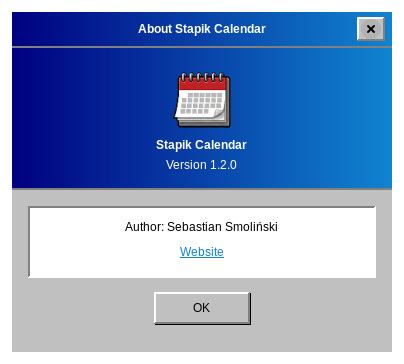
Source code and reports of problems: github.com/Stapik-Group/stapik-calendar. The synchronization server: github.com/Stapik-Group/stapik-cloud.